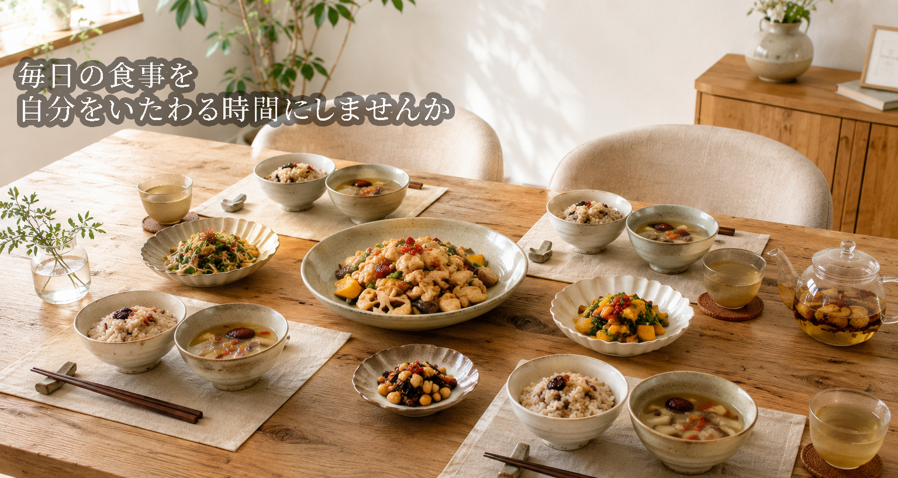
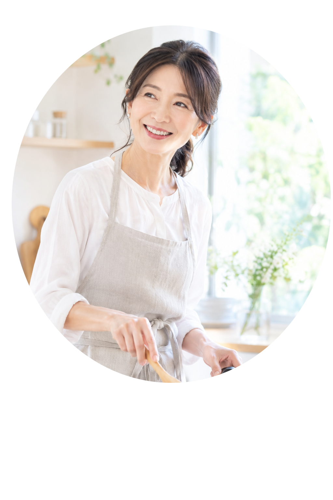

2026/9/7
「秋の食卓を楽しむ、季節の薬膳」
少しずつ秋の気配を感じる季節になりました。
続きを読む
薬膳料理とは、中国の伝統的な食の考え方をもとに、季節や体調に合わせて食材を選び、組み合わせて作る料理です。
いいえ。スーパーで買える食材でも楽しめます。
体験教室と一般クラスを用意しております。
料金：3,500円（税込み）
料金：5,500円（税込み）

薬膳料理研究家・中医薬膳指導員・食育インストラクター
「毎日の食事を、もっと自分をいたわる時間に。」
料理好きの母の影響で、幼い頃から料理に親しんできました。
40代を迎えた頃、仕事や家事に追われる中で、食事をゆっくり楽しむ時間が少なくなり、「毎日の食事こそ、自分の身体を大切にする時間にしたい」と思ったことをきっかけに、薬膳を学び始めました。
薬膳を学ぶ中で感じたのは、薬膳は決して特別な料理ではないということ。
スーパーで手に入る身近な食材を使い、季節やその日の自分の状態に合わせて食材を選ぶ。
そんな小さな工夫から始められることに魅力を感じています。
現在は、40代・50代の女性を中心に、**「無理なく続けられる薬膳」**をテーマにした料理教室を開催しています。
難しい知識や特別な食材に頼るのではなく、毎日の食卓に取り入れやすい薬膳を、一緒に楽しんでいただけたら嬉しいです。
食べることを楽しみながら、これからの自分をいたわる。
そんな時間を、kokoroで過ごしていただければと思っています。
40代・女性
50代・女性
2026/9/7
少しずつ秋の気配を感じる季節になりました。
続きを読む2026/4/17
薬膳がはじめての方も、ぜひお気軽に。
「薬膳に興味はあるけれど、何から始めたらいいの？」
「薬膳料理って難しそう……」
2026/4/2
はじめまして。 薬膳料理教室kokoroの講師、松田こころです。
続きを読む